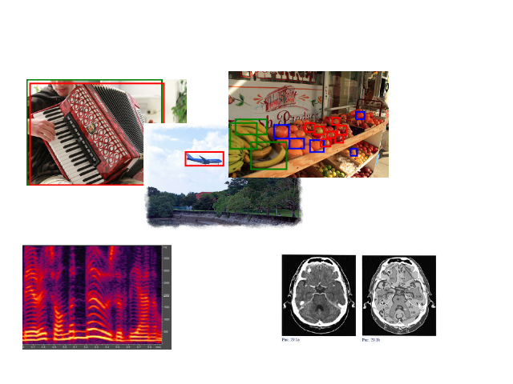

Kharkiv National University of Radio Electronics
Educational and scientific laboratory of intelligent hardware and software systems
Team
- Andriy Yerokhin*, Dean of Computer Science faculty, Professor, Dr. of SC, Software engineering department
- Oleksii Turuta*, Associated Professor, PhD, Software engineering department
- Andrii Babii*, Senior Lecturer, PhD Student, Software engineering department
- Alina Nechyporenko*, Associated Professor, PhD, Biomedical engineering department
- Oleg Garyuk**, Director, PhD (Dr.Med), Medical expert
* Kharkiv National University of Radio Electronics, Laboratory of intelligent software/hardware systems
** ENT Clinic Garyuk, Rhinology laboratory
We are interested in:
- Research related with Machine learning
- Practical problem solving
- Publications
- Big Data and Machine Learning based software development
- Academic mobility projects
Our proposal
Research - Machine learning
- Features identification
- Classification
- Anomaly detection ( with lack of existing anomaly data)
- Pattern analysis
- Statistic analysis
- Fuzzy approach for problem solving
Ingeneering
- Massive parallel computation
- Spark, Hadoop, GPGPU
- IoT data analysis
- User behavior analysis
- Visualization
Research in BigData area
Practical application
GIS
LIDAR data processing for autonomous vehicles, PointCloud to mesh
LIDAR PointCloud data procesing
Biometric. Medicine. Biotechnologies
Security cameras and video surveillance systems
Soil erosion modeling
Massive computations / Massive parallelization
Practical application

Reinforcement Learning application for AI
Video about
Recent publications
- A. Yerokhin, A. Nechyporenko, A. Babii, A. Turuta, I. Mahdalina, Usage of Phase Space Diagram to Finding Significant Features of Rhinomanometric Signals, Proc. of the International Conference on Computer Sciences and Information Technologies, Lviv, Ukraine, (2016), 70-73.
- A. L. Yerokhin, A. S. Babii, A. S. Nechyporenko, O. P. Turuta, A Lars-Based Method of the Construction of a Fuzzy Regression Model for the Selection of Significant Features, Cybernetics and Systems Analysis, Vol. 52, Issue 4, (2016), 641–646.
- Processing and analysis of rhinomanometric signals by F-transform approximation. A. Yerokhin; A. Nechyporenko; A. Babii; O. Turuta - 2016 IEEE First International Conference on Data Stream Mining & Processing (DSMP)
- Usage of F-transform to finding informative parameters of rhinomanometric signals. A. Yerokhin; A. Nechyporenko; A. Babii; O. Turuta - Scientific and Technical Conference "Computer Sciences and Information Technologies" (CSIT), 2015 Xth International
- A new intelligence-based approach for rhinomanometric data processing. A. Yerokhin; A. Nechyporenko; A. Babii; O. Turuta - 2016 IEEE 36th International Conference on Electronics and Nanotechnology (ELNANO)
- O. Turuta, I. Perova, A.Deineko, Evolving Flexible Neuro-Fuzzy System for Medical Diagnostic Tasks, International Journal of Computer Science and Mobile Computing - JCSMC, Vol. 4, Issue. 8, (2015), 475-480.
- O.Turuta, I.Perova, A.Deineko, Y.Kutsenko, M.Shalamov, Evolving Neural Network for Kernel Principal Component Analysis, International Journal of Computer Science and Mobile Computing - JCSMC, Vol. 4, Issue. 9, (2015), 356-363.